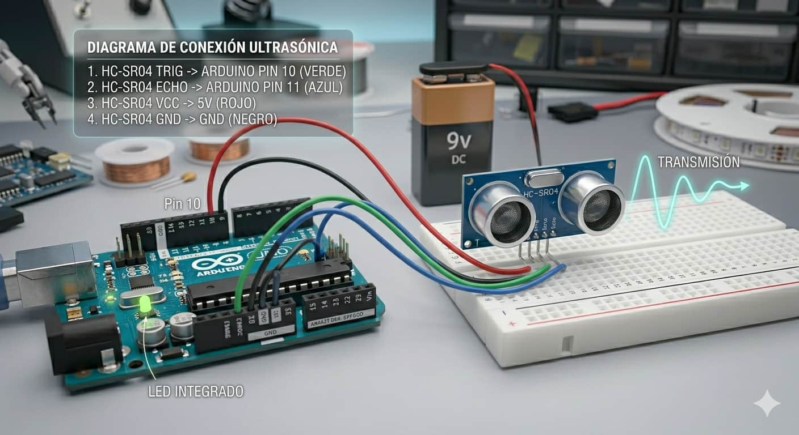
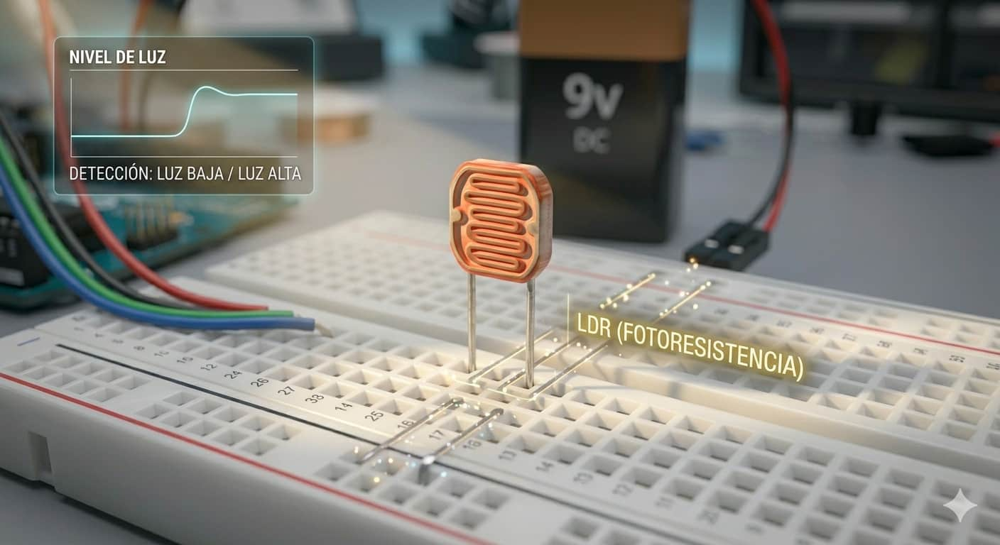
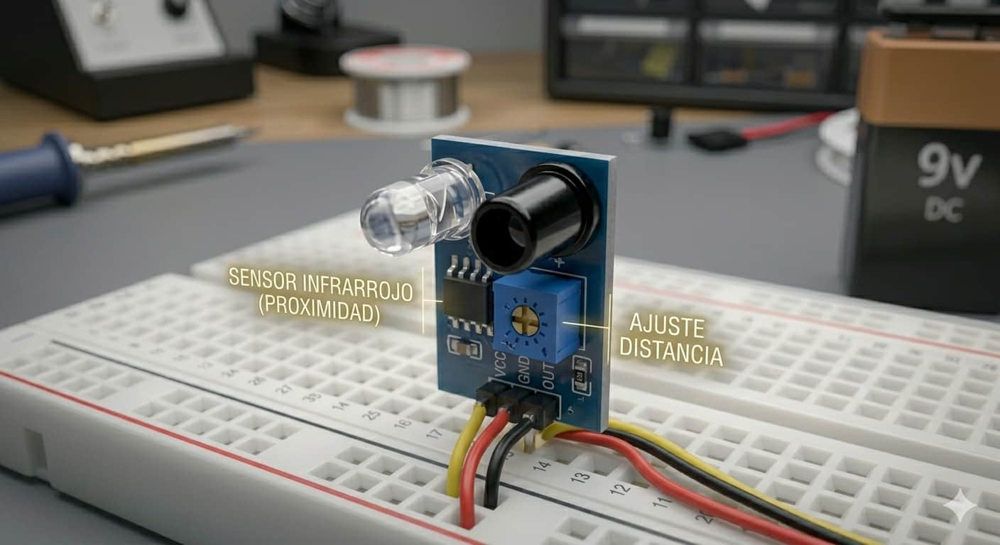
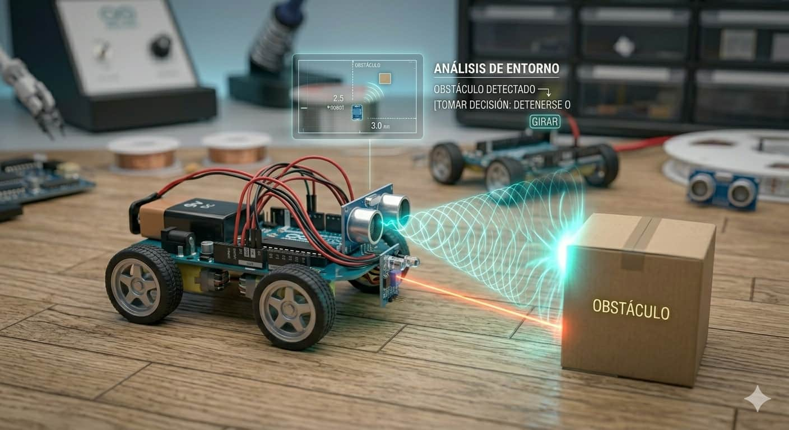
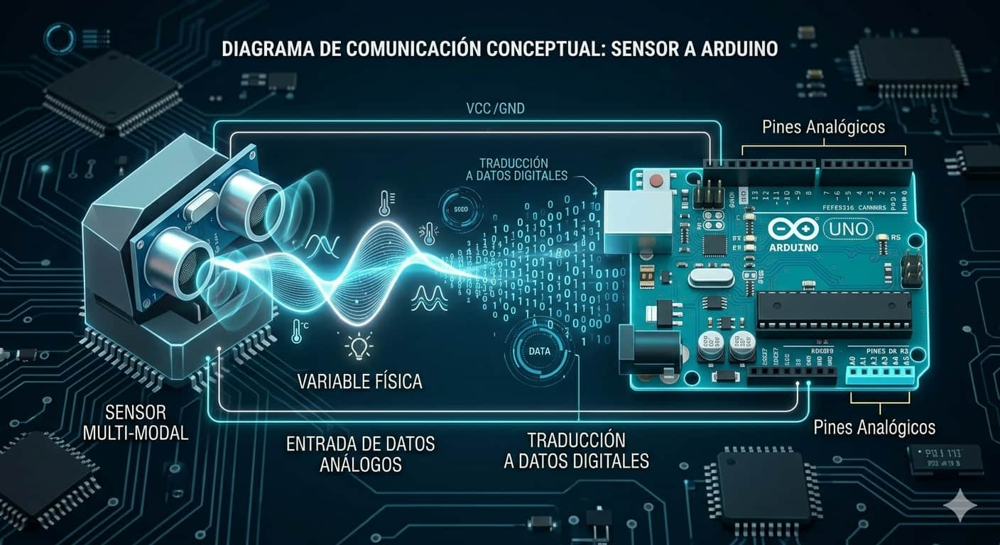

Sensor Ultrasónico

Mide distancias mediante el rebote de ondas de sonido, permitiendo al robot "ver" obstáculos de forma similar a como lo hacen los murciélagos.

Los sensores representan los "sentidos" de un sistema robótico. Son dispositivos diseñados para detectar estímulos del entorno y convertirlos en señales eléctricas, permitiendo que una máquina deje de ser un sistema aislado y comience a interactuar con el mundo de manera dinámica.

Mide distancias mediante el rebote de ondas de sonido, permitiendo al robot "ver" obstáculos de forma similar a como lo hacen los murciélagos.

Detecta la intensidad lumínica ambiental. Es ideal para robots que buscan la luz o sistemas que se activan al oscurecer.

Identifica radiación IR o superficies reflectantes, muy utilizado para que los robots sigan líneas negras en el suelo o detecten proximidad.

En la robótica educativa, los sensores son vitales para dotar al robot de autonomía. Gracias a ellos, el sistema puede determinar distancias para evitar colisiones, medir la temperatura para activar ventiladores o identificar el movimiento de personas para reaccionar ante una presencia externa.
El proceso de comunicación se inicia cuando el sensor capta una señal y la envía a los pines de entrada de la placa Arduino para ser procesada.

El microcontrolador traduce los datos recibidos y toma decisiones lógicas basadas en el código programado:
Estas capacidades permiten crear tecnologías fascinantes que vemos a diario:
Si deseas profundizar en la calibración y el código específico de cada dispositivo, visita nuestras páginas detalladas.